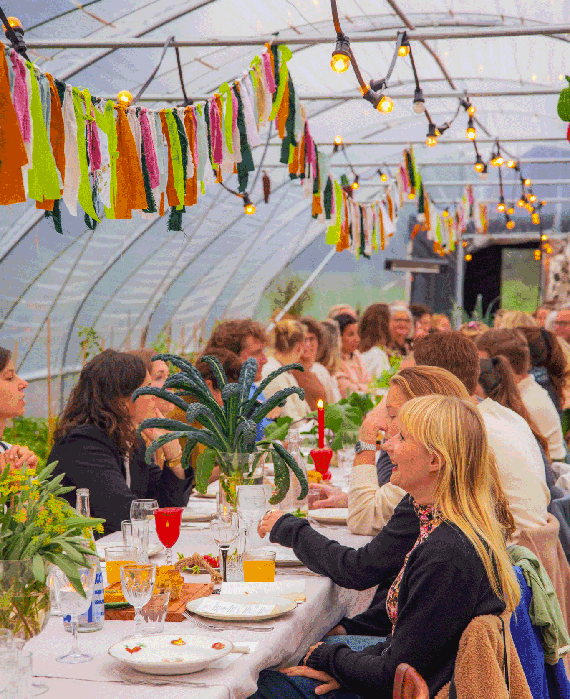
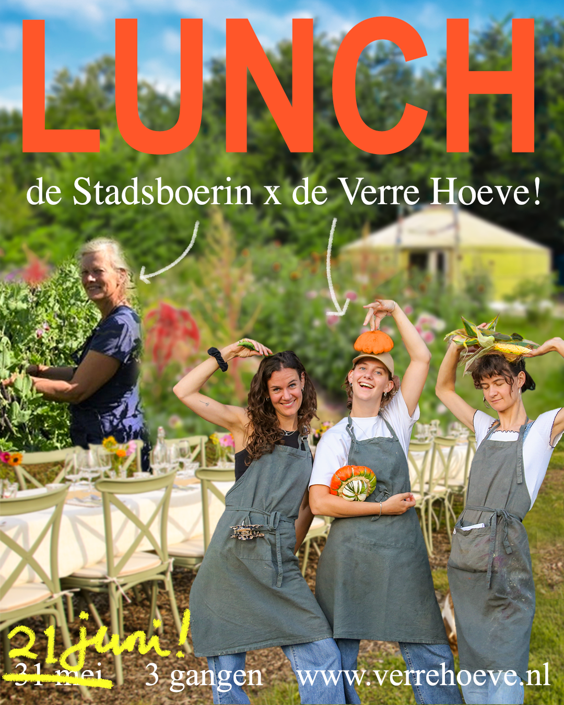
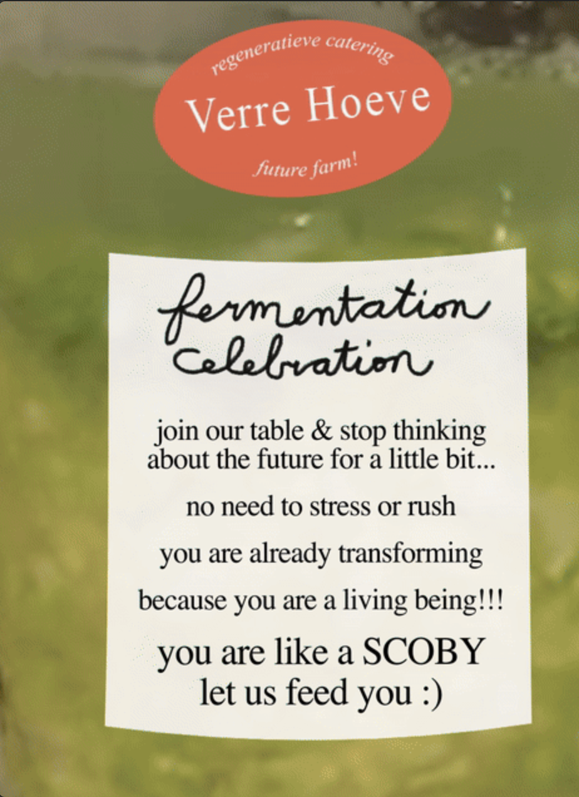
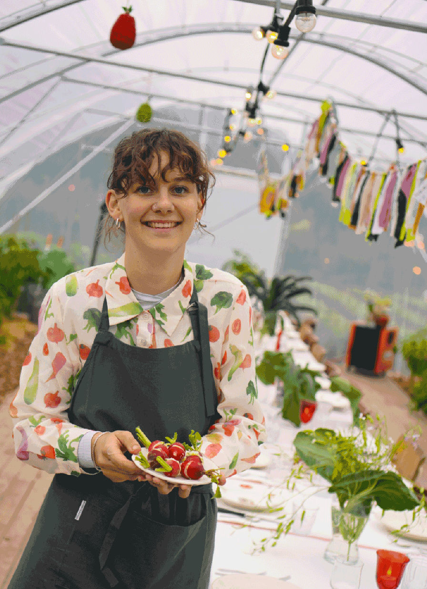
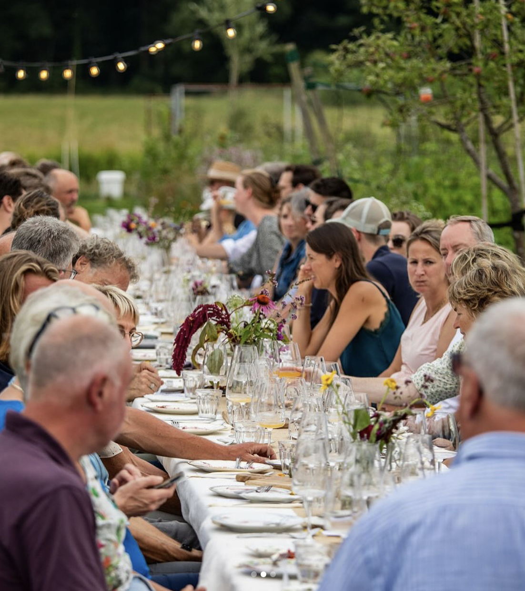
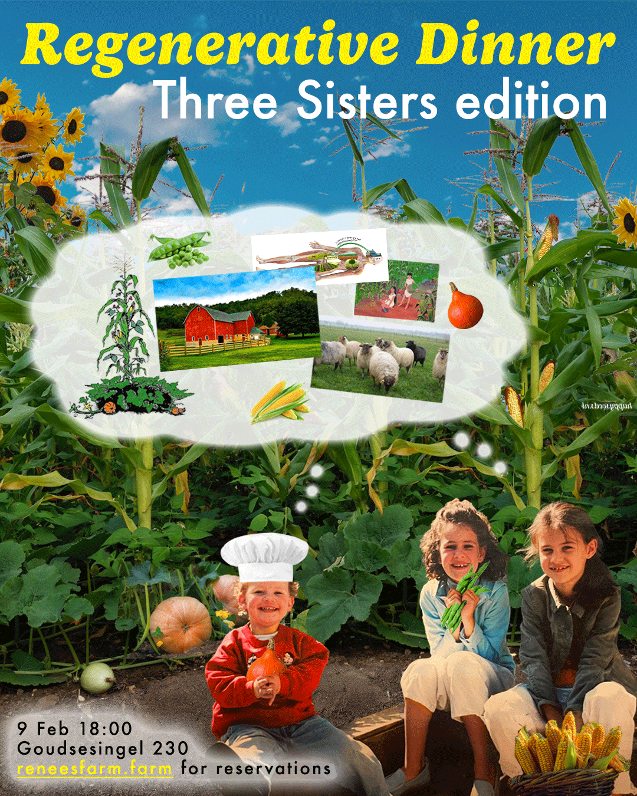

de Verre Hoeve
wij zijn Renée, Isabelle en Emma Verhoeven, zussen met de droom om ooit samen een regeneratieve boerderij te runnen waar onze passies voor goed eten, sociale impact en kunst samen kunnen komen...
 Isabelle+bonen, Renée+pompoen,
Emma+maïs
Isabelle+bonen, Renée+pompoen,
Emma+maïs
...tot dat lukt verzorgen we regeneratieve diners op allerlei locaties!
wat betekent regeneratief?
daarmee bedoelen we herstellend of vernieuwend: regeneratieve landbouw is een manier van boeren die de bodem, biodiversiteit en gemeenschap herstelt en versterkt in plaats van uitput!
agenda

2, 3 & 4 oktober 2026
Pluck van het Velddiner
Pluck van het Veld, Cromvoirt
een unieke ervaring midden in de tuinderij incl rondleiding, welkomstdrankje, amuse, 4 gangen, wijn- of alcoholvrij arrangement & koffie of thee.
meer info / reserveren
14 juni 2026
LUNCH bij de Stadsboerin
de Stadsboerin, Rotterdam
een driegangenlunch bij tuinderij de Stadsboerin in Rotterdam, met groenten, kruiden en wildpluk uit de tuin.
meer info / reservereneerdere events

6 maart 2026
Fermentation Celebration
Extra Practice, Rotterdam
regenerative dinner, celebrating the slow ferment, the brewing phase, the process...
meer info/reserveren
3 & 4 oktober 2025
Pluck van het Velddiner
Pluck van het Veld, Cromvoirt
4 gangendiner in de kas met producten uit de tuinderij!
meer info
6 september 2025
Velddiner bij Erve Kiekebos
Erve Kiekebos, Empe
regenerative dinner, celebrating the slow ferment, the brewing phase, the process...
meer info/reserveren
9 februari 2025
Regenerative Dinner: 3 sisters edition
Restaurant Rotonde, Rotterdam
regenerative dinner inspired by the Three Sisters farming method, sharing our process of dreaming and learning about starting a farm together...
foto's


contact
zoek je lokale, seizoensgebonden en vegetarische catering op maat? of heb je zin om met ons samen te werken?
stuur ons een mailtje